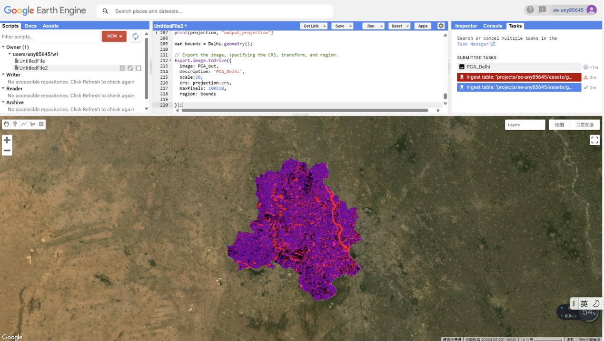
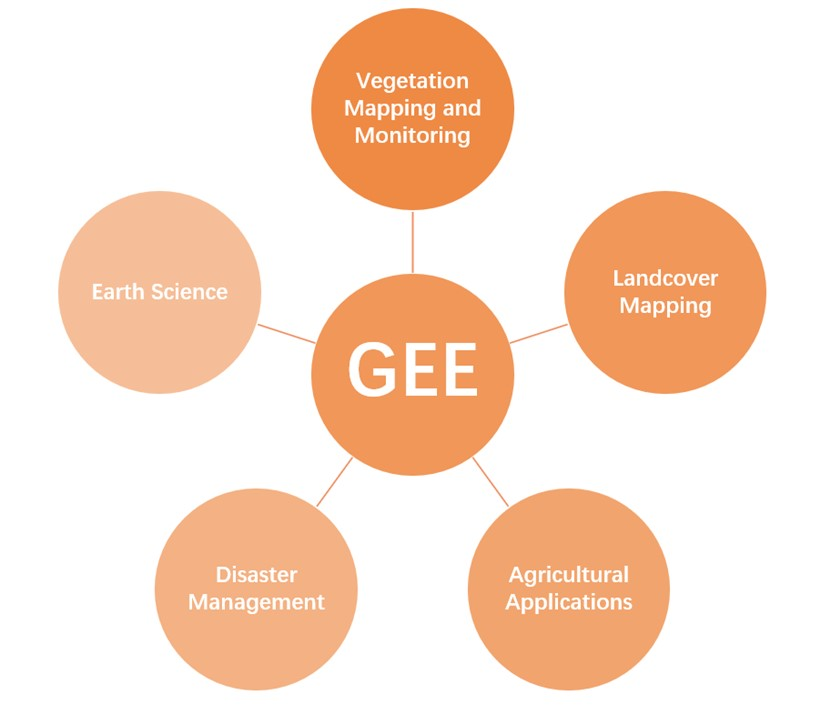
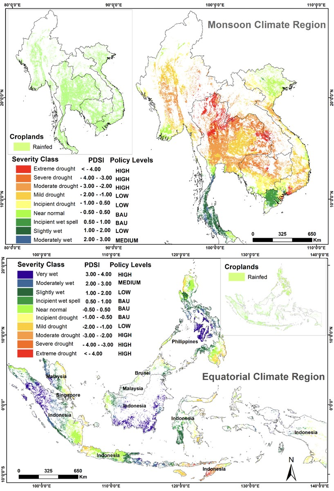
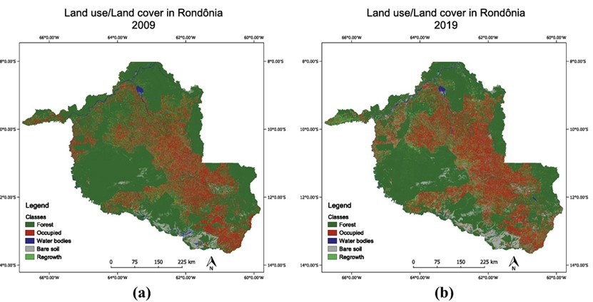

6 week 6
6.1 Summary
6.1.1 Lecture
Part 1: The set up of GEE
1.Terms / jargon specific to GEE
(1)“Geospatial” processing service
[1]Geo = Earth’s surface (and near surface)
[2]Spatial = Any space (not necessarily geographic)
(2)It permits geospatial analysis at scale
[1]Scale ?
massive datasets
planetary scale analysis
really quickly (within seconds)
(2)GEE terms/jargons
Image = raster
Feature = vector
Image stack = ImageCollection
Feature stack = FeatureCollection
2.Client vs server side
Client side – browser
Server side – where data is stored
3.Scale (resolution)
It refers to pixel resolution.
Part 2: GEE in action (how we use it)
1.Buildings blocks of data (the data in GEE)
Raster data belong to an ImageCollection.
We use the specific function to load and manipulate.
2.Collections, geometries and features
Geometry = point/line/polygon with no attributes
Feature = geometry with attributes
Feature collection = several features with attributes
3.Reducing images (e.g. zonal statistics)
[1]var median = collection.reduce(ee.Reducer.median());
[2] var meanDictionary = image.reduceRegion({
reducer: ee.Reducer.mean(),
geometry: region.geometry(),
scale: 30,
maxPixels: 1e9
});
6.1.2 Practice
In the practice, I learn how to load data, create points, mosaic and clip images, compute texture and do PCA in GEE. The picture below is the output.
6.2 Application
Mutanga (2019) pointed out that GEE’s research in vegetation mapping and monitoring, landcovering mapping, agricultural applications, disaster management and earth science and other fields.

Venkatappa (2021) used Google Earth Engine to assess 40 years of droughts and floods and their impact on farmland and crop production. Using the Palmer Drought Severity Index (PDSI) as a basis for determining drought and flood levels and crop loss levels, crop production losses in the Southeast Asian Monsoon climate zone (MCR) and Equatorial climate zone (ECR) were assessed at grid points with a resolution of 10 × 10 km.

The study conducted by Floreano (2021) presents data on deforestation in Brazil between 2009 and 2019 and deforestation that is still likely to occur until 2030. Between 2009 and 2019, the Google Earth Engine platform was the basis for performing LULC evaluations in the Rondonia state via a random forest classifier.

6.3 Reflection
This week we focused on learning about Google Earth Engine. In the lecture, I learned GEe-related terms, client and server, and resolution. In my practice class, I did a PCA analysis of an area in India. By reading the literature, I learned that GEE is an expert in vegetation mapping and monitoring, landcovering mapping, agricultural applications, Fields such as disaster management and earth science have wide applications. For example, GEE can be used to measure the damage to farmland caused by droughts and floods. GEE can also monitor changes in land cover over time.